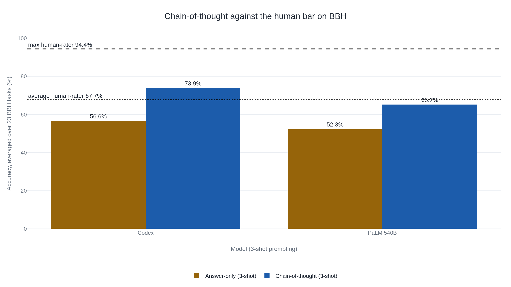

OpenAI withheld GPT-4's BBH score, and a rival published one anyway
The 83.1% for GPT-4 in Anthropic's Claude 3 card came from Google's report, and the tasks behind it had already reached GPT-4's training data.
Why this matters
When a model card says a system scored 86.8% on BIG-Bench Hard, that one line stands in for a chain of decisions you never see. BIG-Bench Hard, usually shortened to BBH, is a set of 23 reasoning tasks that labs still quote when they rank models, and its scores sit in the published cards for Claude, Gemini, and GPT. This lesson takes one real BBH row apart: where the tasks came from, what human score they were measured against, what chain-of-thought prompting does to the figure, and how the same benchmark came to carry a number its own maker had thrown out.
- 01
- Eight worked examples more than tripled a large model's math score: what chain-of-thought prompting is and where it helps.
- 02
- One character of formatting decided whether the model got it right: why changing a prompt moves a score at all.
The number on the model card
Anthropic's Claude 3 model card reports a single row for BIG-Bench Hard: Claude 3 Opus at 86.8%, GPT-4 at 83.1%, GPT-3.5 at 66.6%, all under a setting labeled "3-shot CoT."1 The row shows that Opus outscored GPT-4 on something called BIG-Bench Hard. What the row does not show is where an 86.8% on this test comes from, or what the test was built to measure. The answer runs back through three earlier decisions: a benchmark assembled from hundreds of contributed tasks, a hard subset kept because the best models of 2022 kept failing it, and a prompting method that moves the score by more than ten points.
204 tasks from 450 authors
BBH is carved out of a larger benchmark called BIG-bench. In 2022 a collaboration of 450 authors across 132 institutions assembled 204 tasks, chosen to be the kind of problem the language models of the day were expected to fail.2 The tasks came from many fields and many hands, from logical deduction to word puzzles to questions about everyday physical situations.
To know whether a model was doing well, BIG-bench needed a human score to compare against. A team of expert raters worked through the tasks to set that baseline.2 The paper records two numbers for each task: the mean score across raters, and the max score, meaning the single best rater's result.2 The raters were allowed to use any resource they wanted, internet search included, and worked in sittings of thirty minutes to two hours over several weeks.2 The paper adds that these scores are not meant to be the best a human could do.2
Filtering 209 tasks down to 23
BBH is what is left after a filter. Its authors started from 209 BIG-Bench tasks and cut them down in stages.3
-
209 tasks
Every BIG-Bench task the authors began with.3
-
78 tasks
Those with clean multiple-choice or exact-match answers and enough examples to score, each under 103 examples so three could be shown as worked cases and a hundred kept for the test.3
-
36 tasks
Those where no prior language model had beaten the average human-rater.3
-
23 tasks
What remained after dropping 13 narrow, domain-specific tasks that were hard for reasons of specialist knowledge rather than reasoning.3
The rule at the third step is what defines BBH: the tasks kept are the ones where models were still losing to the average human-rater. The average human-rater is the mean across BIG-bench's team of expert raters, and the paper never says how many people were on the team or how many rated each task.2 Averaged over the 23 BBH tasks, that mean is 67.7%. The best single rater on each task, averaged the same way, reached 94.4%.3 So the bar a model clears to "beat the average human" is the mean of a small group of experts who were allowed to look things up, and it sits almost 27 points under what the best of them managed. A model at 70% has passed the average of that group and is still far short of its strongest rater.
Chain-of-thought moves the score
The BBH paper measured each task two ways. In the first, which it calls answer-only, the model sees three worked examples and then gives its answer directly.3 In the second, the worked examples also spell out the reasoning steps that lead to each answer, so the model writes out its own steps before committing to one. That second method is chain-of-thought prompting, taught in an earlier lesson. The only thing that changes between the two runs is the wording of the prompt, and why a change in wording moves a score is its own subject. Most published BBH numbers, the ones on model cards included, are reported under this 3-shot chain-of-thought protocol.4
Averaged over the 23 tasks, chain-of-thought added 13 to 17 points. PaLM 540B went from 52.3% to 65.2%, and Codex from 56.6% to 73.9%.3 That lift is large enough to change where a model lands against the human bar.

With chain-of-thought, Codex's 73.9% clears the average human-rater's 67.7%. PaLM's 65.2% does not, even though PaLM beats that same bar on 10 of the 23 tasks when they are scored one at a time.3 So whether "chain-of-thought beats the human baseline on BBH" holds depends on which model and which tasks you mean. On the 23-task average it is true for Codex and false for PaLM, and no model tested came near the 94.4% best-human mark.3 This is also why the "3-shot CoT" label on the Claude 3 card matters: the 86.8% for Opus was measured with the prompting method that adds the most, so it is not comparable to an answer-only score.1
OpenAI found the test inside GPT-4's training data
A benchmark score assumes the model is answering questions it has not already seen. When OpenAI evaluated GPT-4 in 2023, it checked that assumption for each benchmark: had the test questions turned up in the data the model was trained on? For BIG-bench, they had.
"During our contamination check we discovered that portions of BIG-bench were inadvertently mixed into the training set, and we excluded it from our reported results."5 GPT-4 Technical Report, OpenAI, 2023
So OpenAI's own report publishes no BBH score for GPT-4.5 Now look again at the Claude 3 card. Its row lists GPT-4 at 83.1%, and a footnote says where that number came from: not OpenAI, but Google's Gemini technical report.1 Same model, same benchmark. The party that trained GPT-4 held its score back, because the test had leaked into training. A rival published a number anyway. That number then traveled into a competitor's card and sat beside Opus as if the two had been measured the same way.
Leakage is easy here because the tasks are public files. BIG-bench ships a fixed "canary" string in every task file precisely so that anyone can detect whether the tasks have been scraped into a training set.6 That guard exists because the risk is general: test items leaking into training data raise a score without any matching gain in ability, a problem now documented across many benchmarks.7
The other thing that happened to BBH is quieter. As models improved they reached near-perfect scores on many of the 23 tasks, so the test stopped telling the top models apart.8 In 2025 a team rebuilt it as BIG-Bench Extra Hard, swapping each task for a harder one that probes the same kind of reasoning. On that replacement the best general-purpose model scored 9.8% and the best reasoning-specialized model 44.8%, a measure of how much room BBH had lost.8 A reader comparing Opus at 86.8% with GPT-4 at 83.1% in that single card row is comparing numbers made under different conditions, one of them on a test its own maker had set aside as compromised. The row reads like a head-to-head, and for that one figure it is not.
The takeaway
A BBH score is a model's average accuracy over 23 tasks. The bar it is measured against is itself the mean of a small expert team who were allowed to search the web, and it sits well below the best single rater's 94.4%. Chain-of-thought prompting, the setting behind most published BBH numbers including Opus's 86.8%, adds enough to carry some models over that average and not others. And the same card row that let Opus and GPT-4 look like a fair contest was quoting a GPT-4 figure OpenAI itself withheld, because the test had turned up in GPT-4's training data. Read the 86.8% and the 83.1% again and they answer different questions: measured with different prompting, against a bar of searchable experts, and in one case on tasks the model had already been trained on.
- 01
- Challenging BIG-Bench Tasks and Whether Chain-of-Thought Can Solve Them: the selection rule and the answer-only versus chain-of-thought tables in full.
- 02
- BIG-Bench Extra Hard: the harder replacement built once BBH saturated.
Sources
- Anthropic · Claude 3 Model Card
- arXiv · Srivastava et al., Beyond the Imitation Game (BIG-bench)
- arXiv · Suzgun et al., Challenging BIG-Bench Tasks and Whether Chain-of-Thought Can Solve Them
- Benchmarking Agents · BIG-Bench Hard, protocol and saturation
- arXiv · OpenAI, GPT-4 Technical Report
- GitHub · google/BIG-bench
- DeepLearning.AI · The Batch, The Problem With Benchmark Contamination in AI
- arXiv · Kazemi et al., BIG-Bench Extra Hard